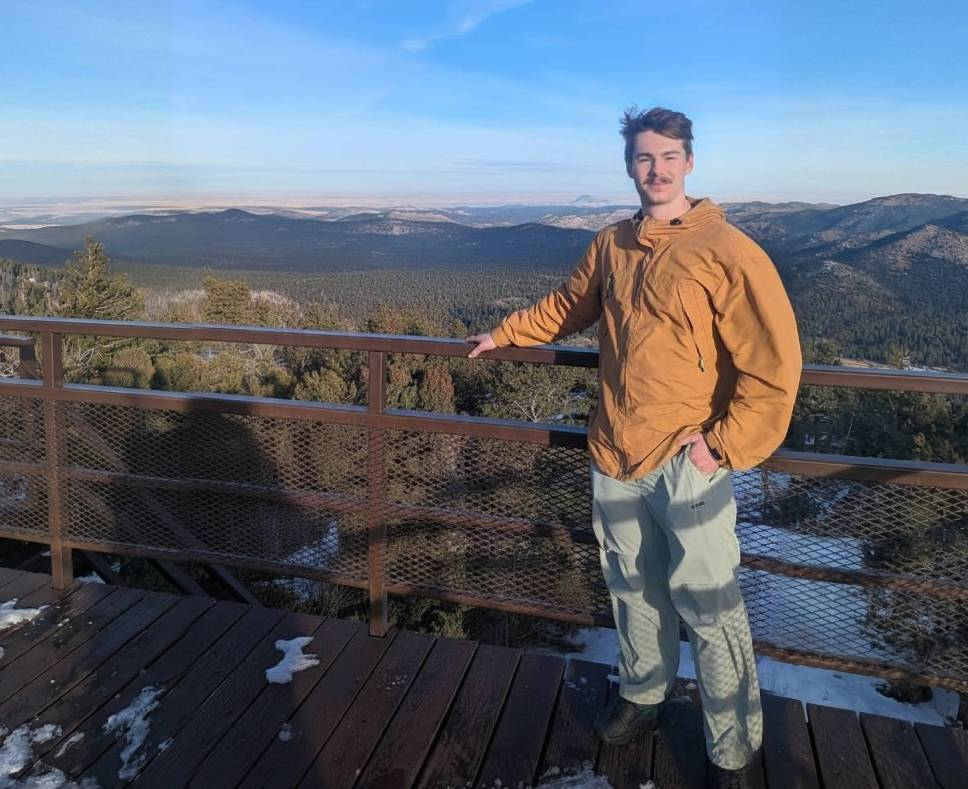

Me overlooking my homeland in the Black Hills of South Dakota.
About Roman Slack
Roman Slack is a Lead AI Platform Engineer at Just-Tech LLC, where he builds production AI systems for the legal sector deployed to over 60,000 users with $130,000+ in sales generated. He currently works remotely from Salt Lake City, Utah, and also works in and is available for roles in New York City. He additionally takes on independent AI consulting work for companies and founders. He was previously an AI research intern at the Air Force Research Laboratory (AFRL) Information Directorate.
Across 50+ projects and 1,500+ hours, his work spans reinforcement learning for missile interception (Hlynr Intercept), LLM-driven autonomous UAV swarm control (AUS-Lab), real-time low-latency voice AI (Her), multi-agent LLM simulation (SimuVerse), and full-stack web applications. He has won hackathons including two first-place wins at HackPrinceton Fall 2025 — the Y Combinator Challenge (earning guaranteed YC interviews) and the Dedalus Labs track — for Discerio, plus HackRPI and Columbia's Best Use of AI, and founded NextGen, a free youth coding program.
Outside engineering, Roman Slack is a mountaineer, trail runner, photographer, 3D modeler, music producer, and weightlifter. Explore his projects, experience, and hobbies, or get in touch about AI consulting and engineering work.